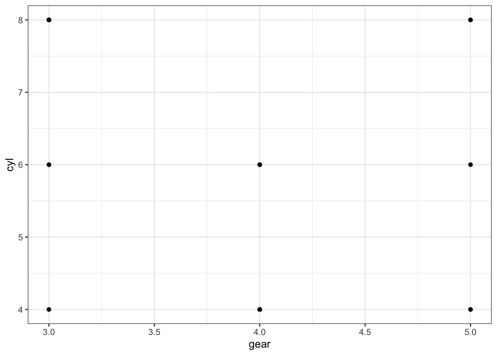

Chapter 3 RMarkdown
首先从Markdown的基础语法开始.
3.1 Markdown语法
markdown语法一般是使用符号转变为特殊格式.这样,看起来markdown文件都是plain text(纯文本),但是渲染之后,就可以得到特殊格式的文件了.
很多语法没有必要记住,只需要记住大概常用的几个就好,遇到不会的,直接google就可以.
3.3 图片 (Image)
注意
#和文字之间一定要空格.
插入图片的基本语法:
比如使用下面语句:

这种插入图片的办法,不能设置图片的大小,如果想要设置图片大小,可以使用HTML语法(img标签)插入,markdown是支持HTML语法的.
HTML img标签还有很多的其他功能,比如对齐等.
常用的一些参数:
| 属性 | 描述 |
|---|---|
| alt | 图像替代文本 |
| src | 图片链接或者本地地址 |
| height | 图片高度,单位可以是%或者pixel |
| weight | 图片宽度,单位可以是%或者pixel |
| weight | 图片宽度,单位可以是%或者pixel |
| align | 图片位置,只支持left或者right |
图片默认是靠左对齐.如果想要居中,很奇怪不能使用<img>标签,需要使用<p>标签.也就是段落.
<p align = "center">
<img src = 'https://www.shenxt.info/files/wechat_QR.jpg' alt = 'shenxiaotao' height = 50% width = 50% />
</p>
3.4 链接 (Links)
- 直接写url
语法:
- 将网址超链接给某段文字
语法:
想要访问我的网站,请点击这里
- HTML插入链接
如果我们想要更多的链接功能,比如点击链接打开新的窗口.这时候可以使用<a>标签.
语法:
常用属性含义如下:
| 属性 | 描述 |
|---|---|
| href | 链接网址url |
| target | 在何处打开链接, _blank, _parent, _self, _top |
比如我们插入一个网址,点击之后在新的网页打开.
想要访问我的网站,请点击这里.
- 将超链接绑定在图片上
使用HTML语法,可以将超链接绑定在一个图片上.
比如:
点击下图查看我的网站:
3.5 强调 (Emphasize)
强调包括斜体,高亮,加粗等等.
- 斜体
语法如下:
这是斜体
这也是斜体
- 加粗
语法如下:
这是粗体
这也是粗体
- 加粗和斜体
语法如下:
这是粗体也是斜体
这是粗体也是斜体
- 删除线
语法如下:
删除这句话
- 其他可以使用HTML语法实现的强调
Markdown只有以上几种强调的用法,使用HTML可以实现一些其他的内容.比如字体颜色等.
字体颜色可以使用<font>标签实现.
比如我们想用红色字体.
这段话使用红色字体.
<font>标签常用属性:
| 属性 | 描述 |
|---|---|
| color | 颜色 |
| face | 字体 |
| size | 字体大小 |
3.7 代码块 (Code chunks)
- 单独代码
语法:
```
library(ggplot2)
library(tidyverse)
mtcars %>%
ggplot(aes(x = gear, cyl)) +
geom_point() +
theme_bw()
```最后渲染结果为:
library(ggplot2)
library(tidyverse)
mtcars %>%
ggplot(aes(x = gear, cyl)) +
geom_point() +
theme_bw()如果是使用Rmarkdown,还可以直接让代码运行出现结果.
语法:
```{r, eval = TRUE}
library(ggplot2)
library(tidyverse)
mtcars %>%
ggplot(aes(x = gear, cyl)) +
geom_point() +
theme_bw()
```library(ggplot2)
library(tidyverse)
mtcars %>%
ggplot(aes(x = gear, cyl)) +
geom_point() +
theme_bw()
Rmarkdown中代码块中有很多内容可以设置.
- 行内代码
比如:
行内代码可以用来强调某个部分.
当然,在rmakdown中,代码块是可以运行的,所以行内代码也可以运行得到结果.
比如:
There were 50 cars studied
3.9 列表 (List)
- 有序列表 (Ordered list)
直接使用数字即可
语法:
Item 1
Item 2
Item 3
- 无序列表 (Unordered list)
无需列表可以使用*或者-来创建.
语法:
- Item 1
- Item 2
- Item 2.1
- Item 2.2
- Item 3
语法:
- Item 1
- Item 2
- Item 2.1
- Item 2.2
Item 3
任务列表 (Task list)
有的markdown编辑器是支持任务列表的,比如github,但是有些也不支持.比如rmakdown就是不支持的(本书就是用rmakrdown写的).
语法:
- [x] Write the press release
- [ ] Update the website
- [ ] Contact the media
3.10 表格 (Tables)
原生态的markdown表格语法非常简单.
语法:
| First name | Last name | Sex |
| ------------- |-------------| -----|
| Xiaotao |Shen | Male |
| Chuchu | Wang | Female || First name | Last name | Sex |
|---|---|---|
| Xiaotao | Shen | Male |
| Chuchu | Wang | Female |
Rmarkdown可以使用函数来插入表格.
DT包
语法:
```{r, eval=TRUE}
library(DT)
DT::datatable(
head(iris, 10),
fillContainer = TRUE,
options = list(pageLength = 4)
)
```knitr包
语法:
| Sepal.Length | Sepal.Width | Petal.Length | Petal.Width | Species |
|---|---|---|---|---|
| 5.1 | 3.5 | 1.4 | 0.2 | setosa |
| 4.9 | 3.0 | 1.4 | 0.2 | setosa |
| 4.7 | 3.2 | 1.3 | 0.2 | setosa |
| 4.6 | 3.1 | 1.5 | 0.2 | setosa |
| 5.0 | 3.6 | 1.4 | 0.2 | setosa |
| 5.4 | 3.9 | 1.7 | 0.4 | setosa |
3.11 段落
markdown中对于段落的控制比较上,如果需要对段落进行修饰,比如对齐,段间距等等,需要使用HTML<p>标签进行设置.
- 对齐
对齐是<p>标签中的align属性.
- 左对齐
<p align = "left">
Markdown is a lightweight markup language with plain-text-formatting syntax. Its design allows it to be converted to many output formats, but the original tool by the same name only supports HTML.[9] Markdown is often used to format readme files, for writing messages in online discussion forums, and to create rich text using a plain text editor.
</p>Markdown is a lightweight markup language with plain-text-formatting syntax. Its design allows it to be converted to many output formats, but the original tool by the same name only supports HTML.[9] Markdown is often used to format readme files, for writing messages in online discussion forums, and to create rich text using a plain text editor.
- 右对齐
<p align = "right">
Markdown is a lightweight markup language with plain-text-formatting syntax. Its design allows it to be converted to many output formats, but the original tool by the same name only supports HTML.[9] Markdown is often used to format readme files, for writing messages in online discussion forums, and to create rich text using a plain text editor.
</p>Markdown is a lightweight markup language with plain-text-formatting syntax. Its design allows it to be converted to many output formats, but the original tool by the same name only supports HTML.[9] Markdown is often used to format readme files, for writing messages in online discussion forums, and to create rich text using a plain text editor.
- 居中对齐
<p align = "center">
Markdown is a lightweight markup language with plain-text-formatting syntax. Its design allows it to be converted to many output formats, but the original tool by the same name only supports HTML.[9] Markdown is often used to format readme files, for writing messages in online discussion forums, and to create rich text using a plain text editor.
</p>Markdown is a lightweight markup language with plain-text-formatting syntax. Its design allows it to be converted to many output formats, but the original tool by the same name only supports HTML.[9] Markdown is often used to format readme files, for writing messages in online discussion forums, and to create rich text using a plain text editor.
- 两端对齐
<p align = "justify">
Markdown is a lightweight markup language with plain-text-formatting syntax. Its design allows it to be converted to many output formats, but the original tool by the same name only supports HTML.[9] Markdown is often used to format readme files, for writing messages in online discussion forums, and to create rich text using a plain text editor.
</p>Markdown is a lightweight markup language with plain-text-formatting syntax. Its design allows it to be converted to many output formats, but the original tool by the same name only supports HTML.[9] Markdown is often used to format readme files, for writing messages in online discussion forums, and to create rich text using a plain text editor.
- 行间距
使用<p>标签的style属性进行设置.
将line-height设置为300%相当于是三倍行距.
<p align = "justify" style="line-height:300%">
Markdown is a lightweight markup language with plain-text-formatting syntax. Its design allows it to be converted to many output formats, but the original tool by the same name only supports HTML.[9] Markdown is often used to format readme files, for writing messages in online discussion forums, and to create rich text using a plain text editor.
</p>Markdown is a lightweight markup language with plain-text-formatting syntax. Its design allows it to be converted to many output formats, but the original tool by the same name only supports HTML.[9] Markdown is often used to format readme files, for writing messages in online discussion forums, and to create rich text using a plain text editor.
3.12 插入icon
可以插入符号工具包Font Awesome.一般的markdown编辑器都已经支持直接使用HTML插入icon.
比如插入微信图标:
如果不支持,可以在markdown的最底端插入下面的代码:
<head>
<script defer src="https://use.fontawesome.com/releases/v5.0.13/js/all.js"></script>
<script defer src="https://use.fontawesome.com/releases/v5.0.13/js/v4-shims.js"></script>
</head>
<link rel="stylesheet" href="https://use.fontawesome.com/releases/v5.0.13/css/all.css">当然也可以使用HTML的<a>标签让icon绑定一个超链接.
3.13 数学公式 (Equations)
Markdown可以方便插入数学公式.
3.13.1 行内和行外
如果是将公式插入到行内,使用$公式$.
如果是将公式单独出来,使用$$公式$$.
3.13.2 上标和下标
- 上标
^
比如:$x^4$:\(x^4\).
- 下标
_
比如:$x_2$:\(x_2\)
3.13.3 占位符
- 空格
单个空格:\quad.
比如:$x\quady$: \(x \quad y\)
两个个空格:\qquad.
比如:$x\qquady$: \(x \qquad y\)
- 大空格
符号:\
比如:$x\y$:\(x\ y\).
- 中空格
符号:\:
比如:$x\:y$:\(x\: y\).
- 小空格
符号:\,
比如:$x\,y$:\(x\, y\).
- 紧贴
符号:\!
比如:$x\!y$:\(x\! y\).
3.13.4 四则运算
- 平均数运算
符号：\overline{算式}，如：$\overline{xyz}$:\(\overline{xyz}\)
开二次方运算，符号：
\sqrt，如：$\sqrt x$:\(\sqrt x\)开方运算，符号：
\sqrt[开方数]{被开方数}，如：$\sqrt[3]{x+y}$:\(\sqrt[3]{x+y}\)对数运算，符号：
\log，如：$\log(x)$:\(\log(x)\).极限运算，符号：
\lim，如：$\lim^{x \to \infty}_{y \to 0}{\frac{x}{y}}$:\(\lim^{x \to \infty}_{y \to 0}{\frac{x}{y}}\)极限运算，符号：
\displaystyle \lim，如：$\displaystyle \lim^{x \to \infty}_{y \to 0}{\frac{x}{y}}$:\(\displaystyle \lim^{x \to \infty}_{y \to 0}{\frac{x}{y}}\)求和运算，符号：
\sum，如：$\sum^{x \to \infty}_{y \to 0}{\frac{x}{y}}$:\(\sum^{x \to \infty}_{y \to 0}{\frac{x}{y}}\)求和运算，符号：
\displaystyle \sum，如：$\displaystyle \sum^{x \to \infty}_{y \to 0}{\frac{x}{y}}$:\(\displaystyle \sum^{x \to \infty}_{y \to 0}{\frac{x}{y}}\)积分运算，符号：
\int，如：$\int^{\infty}_{0}{xdx}$:\(\int^{\infty}_{0}{xdx}\)积分运算，符号：
\displaystyle \int，如：$\displaystyle \int^{\infty}_{0}{xdx}$:\(\displaystyle \int^{\infty}_{0}{xdx}\)微分运算，符号：
\partial，如：$\frac{\partial x}{\partial y}$:\(\frac{\partial x}{\partial y}\)矩阵表示，符号：
\begin{matrix} \end{matrix}，如：$\left[ \begin{matrix} 1 &2 &\cdots &4\5 &6 &\cdots &8\\vdots &\vdots &\ddots &\vdots\13 &14 &\cdots &16\end{matrix} \right]$\(\left[ \begin{matrix} 1 &2 &\cdots &4\5 &6 &\cdots &8\\vdots &\vdots &\ddots &\vdots\13 &14 &\cdots &16\end{matrix} \right]\)
3.13.5 集合运算
属于运算，符号：
\in，如：$x \in y$\(x \in y\)不属于运算，符号：
\notin，如：$x \notin y$:\(x \notin y\)不属于运算，符号：
\not\in，如：$x \not\in y$\(x \not\in y\)子集运算，符号：
\subset，如：$x \subset y$\(x \subset y\)子集运算，符号：
\supset，如：$x \supset y$\(x \supset y\)真子集运算，符号：
\subseteq，如：$x \subseteq y$\(x \subseteq y\)非真子集运算，符号：
\subsetneq，如：$x \subsetneq y$\(x \subsetneq y\)真子集运算，符号：
\supseteq，如：$x \supseteq y$\(x \supseteq y\)非真子集运算，符号：
\supsetneq，如：$x \supsetneq y$\(x \supsetneq y\)非子集运算，符号：
\not\subset，如：$x \not\subset y$\(x \not\subset y\)非子集运算，符号：
\not\supset，如：$x \not\supset y$\(x \not\supset y\)并集运算，符号：
\cup，如：$x \cup y$\(x \cup y\)交集运算，符号：
\cap，如：$x \cap y$\(x \cap y\)差集运算，符号：
\setminus，如：$x \setminus y$\(x \setminus y\)同或运算，符号：
\bigodot，如：$x \bigodot y$\(x \bigodot y\)同与运算，符号：
\bigotimes，如：$x \bigotimes y$\(x \bigotimes y\)实数集合，符号：
\mathbb{R}，如：$\mathbb{R}$\(\mathbb{R}\)自然数集合，符号：
\mathbb{Z}，如：$\mathbb{Z}$\(\mathbb{Z}\)空集，符号：
\emptyset，如：$\emptyset$\(\emptyset\)
3.13.6 数学符号
无穷，符号：
\infty，如：$\infty$\(\infty\)虚数，符号：
\imath，如：$\imath$\(\imath\)虚数，符号：
\jmath，如：$\jmath$\(\jmath\)数学符号，符号
\hat{a}，如：$\hat{a}$\(\hat{a}\)数学符号，符号
\check{a}，如：$\check{a}$\(\check{a}\)数学符号，符号
\breve{a}，如：$\breve{a}$\(\breve{a}\)数学符号，符号
\tilde{a}，如：$\tilde{a}$\(\tilde{a}\)数学符号，符号
\bar{a}，如：$\bar{a}$\(\bar{a}\)矢量符号，符号
\vec{a}，如：$\vec{a}$\(\vec{a}\)数学符号，符号
\acute{a}，如：$\acute{a}$\(\acute{a}\)数学符号，符号
\grave{a}，如：$\grave{a}$\(\grave{a}\)数学符号，符号
\mathring{a}，如：$\mathring{a}$\(\mathring{a}\)一阶导数符号，符号
\dot{a}，如：$\dot{a}$\(\dot{a}\)二阶导数符号，符号
\ddot{a}，如：$\ddot{a}$\(\ddot{a}\)上箭头，符号：
\uparrow，如：$\uparrow$\(\uparrow\)上箭头，符号：
\Uparrow，如：$\Uparrow$\(\Uparrow\)下箭头，符号：
\downarrow，如：$\downarrow$\(\downarrow\)下箭头，符号：
\Downarrow，如：$\Downarrow$\(\Downarrow\)左箭头，符号：
\leftarrow，如：$\leftarrow$\(\leftarrow\)左箭头，符号：
\Leftarrow，如：$\Leftarrow$\(\Leftarrow\)右箭头，符号：
\rightarrow，如：$\rightarrow$\(\rightarrow\)右箭头，符号：
\Rightarrow，如：$\Rightarrow$\(\Rightarrow\)底端对齐的省略号，符号：
\ldots，如：$1,2,\ldots,n$\(1,2,\ldots,n\)中线对齐的省略号，符号：
\cdots，如：$x_1^2 + x_2^2 + \cdots + x_n^2$\(x_1^2 + x_2^2 + \cdots + x_n^2\)竖直对齐的省略号，符号：
\vdots，如：$\vdots$\(\vdots\)斜对齐的省略号，符号：
\ddots，如：$\ddots$\(\ddots\)
3.13.7 希腊字母
| 字母 | 符合 | 字母 | 符号 |
|---|---|---|---|
| \(A\) | $A$ |
\(\alpha\) | $\alpha$ |
| \(B\) | $B$ |
\(\beta\) | $\beta$ |
| \(\Gamma\) | $\Gamma$ |
\(\gamma\) | $\gamma$ |
| \(\Delta\) | $\Delta$ |
\(\delta\) | $\delta$ |
| \(E\) | $E$ |
\(\epsilon\) | $\epsilon$ |
| \(Z\) | $Z$ |
\(\zeta\) | $\zeta$ |
| \(H\) | $H$ |
\(\eta\) | $\eta$ |
| \(\Theta\) | $Theta$ |
\(\theta\) | $\theta$ |
| \(I\) | $I$ |
\(\iota\) | $\iota$ |
| \(K\) | $K$ |
\(\kappa\) | $\kappa$ |
| \(\Lambda\) | $\Lambda$ |
\(\lambda\) | $\lambda$ |
| \(M\) | $M$ |
\(\mu\) | $\mu$ |
| \(N\) | $N$ |
\(\nu\) | $\nu$ |
| \(\Xi\) | $\Xi$ |
\(\xi\) | $\xi$ |
| \(O\) | $O$ |
\(\omicron\) | $\omicron$ |
| \(\Pi\) | $\Pi$ |
\(\pi\) | $\pi$ |
| \(P\) | $P$ |
\(\rho\) | $\rho$ |
| \(\Sigma\) | $\Sigma$ |
\(\sigma\) | $\sigma$ |
| \(T\) | $T$ |
\(\tau\) | $\tua$ |
| \(\Upsilon\) | $\Upsilon$ |
\(\upsilon\) | $\upsilon$ |
| \(\Phi\) | $\Phi$ |
\(\phi\) | $\phi$ |
| \(X\) | $X$ |
\(\chi\) | $\chi$ |
| \(\Psi\) | $\Psi$ |
\(\psi\) | $\psi$ |
| \(\Omega\) | $\Omega$ |
\(\omega\) | $\omega$ |